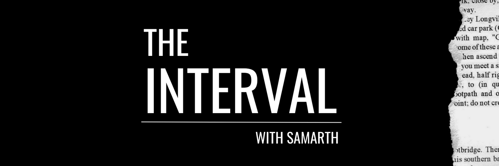

The Interval is a fortnightly newsletter to think deeply about the truth-seeking process and forces that distort it. Currently on pause. Returning soon.
Introduction: Welcome to The Interval — 11 December, 2021
#1: Inside a fictional education revolution — 18 December, 2021
In 2017, Rajasthan was both the best and the worst Indian state in terms of learning outcomes. How did that happen?
#2: Five books on thinking clearly — 1 January, 2022
#3: The Wire’s TekFog investigation: A futile search for evidence — 15 January, 2022
The Wire’s recent three-part investigation into a secret BJP app called TekFog raised great concerns about a powerful tool that hijacks social media and targets thousands with a click of a button. But a closer look at the evidence reveals glaring holes. What we have, in fact, is a grab-bag of possibly interesting leads and great leaps of extrapolation held together by ‘confirmation bias’. The failures in this reporting—despite best intentions—point to a critical, underlying problem with Indian journalism today.
#4: A different way to think about Indian media — 29 January, 2022
Is the Indian media broken beyond repair? Or is it thriving as feisty regional and independent outlets report truth to power? The answer lies not in the specifics but the larger systems. The answer is also complicated, not even remotely captured by tweet-sized debates that often occupy our attention.
#5: Feeding the Sharks: The unpalatable truth about 'healthy' food — 12 February, 2022
The wildly popular show ‘Shark Tank India’ introduced us to an exciting array of startups promising to deliver delicious snacks, drinks and desserts that are good for us. But an assessment of their nutritional charts reveals how food marketeers use misleading labels to trick consumers. When shopping at the grocery store, the buyer truly has to beware.
#6: Sugar-coated conspiracies: How ‘publication bias’ amplifies half-truths — 26 February, 2022
Journalists are hard-wired to look for instances of shadowy wrongdoing. This is especially true for stories that involve cronyism, conflict of interest or payoffs in scientific research and/or regulatory policy. But a New York Times story that called out a prominent Indian scientist—overseeing packaged labelling in India—shows how this bias can lead to bad reporting and misinformation. Even when there is smoke, there isn’t always fire.
#7: Indian pollsters are doing fine. Here is how forecasts work. — 27 March, 2022
Why do we have election polls at all? How does a polling company craft and execute an accurate survey? Why do some succeed while others fail? Also: how do we define ‘accuracy’? The answers to these common-sense questions may surprise you.